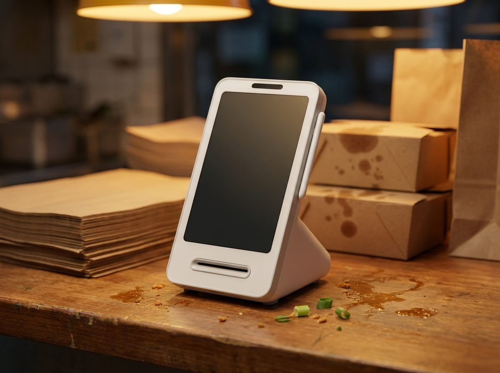
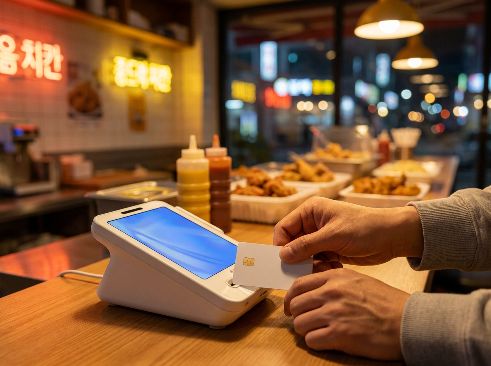

홀 매출과 배달 매출이 따로 논다면, 홀 결제부터 한 대로 모으세요
결론부터 말씀드리면, 홀과 배달을 같이 하시는 매장에서 "오늘 얼마 팔았지?"가 바로 떠오르지 않는 이유는 장사를 못하고 계셔서가 아닙니다. 매출이 들어오는 통로가 애초에 두 갈래로 갈라져 있기 때문입니다. 홀 손님은 카운터에서 카드로 그 자리에서 결제가 끝나고, 배달 주문은 앱에서 접수된 뒤 플랫폼 정산을 거쳐 나중에 들어옵니다. 확인하는 화면이 다르고 돈이 들어오는 시점도 다릅니다. 그래서 하루 문을 닫아도 숫자가 한 장에 모이지 않습니다. 누리네트웍스는 수도권 매장을 직접 방문해 설치하고 관리하는 포스·결제단말 전문 업체입니다. 요즘 홀과 배달을 함께 돌리는 사장님들께 가장 자주 듣는 말씀이 바로 "매출이 안 보인다"입니다. 이 글에서는 왜 두 갈래로 갈라지는지, 그리고 최소한 홀 쪽만이라도 한 대로 모아 두면 무엇이 달라지는지 정리했습니다.
저녁 여섯 시, 매장 안에서 장사가 두 개 돌아갑니다
동네 치킨집의 저녁 피크타임을 떠올려 보시면 이해가 빠릅니다. 튀김기 앞은 계속 돌아가고, 홀 테이블에서는 주문이 들어옵니다. 그 사이 배달 앱에서는 접수음이 계속 울리고, 포장 손님은 카운터 앞에 서서 기다립니다. 사장님과 사모님 두 분이 붙어 계셔도 손이 모자랍니다.
이때 매장 안에서는 사실상 서로 다른 장사가 두 개 돌아가고 있습니다. 하나는 손님이 직접 와서 먹거나 가져가는 홀·포장 장사, 다른 하나는 앱을 통해 들어와 라이더가 실어 가는 배달 장사입니다. 만드는 음식은 같아도 주문이 들어오는 경로, 결제가 이뤄지는 방식, 돈이 손에 들어오는 시점이 전부 다릅니다.
문제는 이 둘이 각자 다른 곳에 기록된다는 점입니다. 홀 결제는 카드 단말기에, 배달 주문은 배달 플랫폼 사장님용 화면에 남습니다. 어느 쪽도 틀린 기록은 아닌데, 두 기록이 만나는 자리가 없습니다. 그래서 마감하고 앉아 하루를 정리하려면 단말기 정산 내역을 한 번 뽑고, 앱을 열어 또 확인하고, 현금과 포장 건까지 머릿속으로 더해야 합니다. 하루 종일 서 있다 앉은 시간에 하기에는 만만치 않은 일입니다.
여기서 많이들 하시는 선택이 "그냥 통장 보고 판단하자"입니다. 그런데 이 방법이 오히려 감을 흐립니다. 이유는 다음 항목에서 말씀드리겠습니다.
통장 잔고와 실제 매출이 어긋나 보이는 이유
통장만 보고 장사가 됐는지 판단하면 대체로 실제와 어긋납니다. 홀 카드 매출과 배달 플랫폼 정산이 서로 다른 주기로 들어오기 때문입니다. 오늘 판 돈이 오늘 통장에 찍히지 않고, 며칠 전 판 돈이 오늘 섞여 들어옵니다. 그러면 "이번 주는 좀 되나 보다" 싶다가도 다음 주에 갑자기 비어 보이는 착시가 생깁니다.
정산 주기와 수수료 조건은 이용하시는 배달 플랫폼마다, 그리고 계약 조건마다 다르게 운영됩니다. 여기서 며칠이라고 단정해 말씀드리기 어려운 영역이니, 지금 쓰고 계신 배달 앱의 사장님 페이지나 정산 안내를 직접 확인해 보시길 권합니다. 카드 매출의 매입·입금 흐름도 마찬가지로 조건에 따라 달라지므로, 여신금융협회 등 공식기관과 계약하신 곳의 최신 안내 기준을 확인하시는 편이 정확합니다.
중요한 것은 정확한 날짜가 아니라 통장은 "번 날"이 아니라 "들어온 날" 기준이라는 사실입니다. 그래서 통장은 자금 흐름을 보는 도구이지, 오늘 장사가 어땠는지 보는 도구가 아닙니다. 오늘의 성적을 보려면 판매가 일어난 그날의 기록을 봐야 합니다.
| 구분 | 홀·포장 결제 | 배달 앱 주문 |
|---|---|---|
| 결제가 끝나는 시점 | 손님이 카운터에서 결제한 순간 | 앱에서 주문·결제 후 접수 |
| 어디서 확인하나요 | 결제 단말기·연동 앱 | 배달 플랫폼 사장님 화면 |
| 돈이 들어오는 흐름 | 카드 매입 절차를 거쳐 입금 | 플랫폼 정산 주기에 따라 입금 |
| 사장님이 바로 볼 수 있나요 | 그 자리에서 확인 가능 | 앱을 따로 열어 확인 |

홀 결제만이라도 한 대로 모으면 하루 흐름이 보입니다
배달 쪽 기록은 플랫폼이 쥐고 있어 매장에서 바꾸기 어렵습니다. 하지만 홀과 포장은 다릅니다. 매장에서 직접 받는 결제만이라도 한 대로 통일해 두면, 적어도 절반은 그날그날 눈으로 확인할 수 있습니다. 이것만 정리돼도 체감이 꽤 달라집니다. 오늘 홀이 잘 됐는지 아닌지가 분명해지면, 비어 보이는 매출이 배달 쪽 흐름 때문인지 홀 손님이 줄어서인지 구분이 되기 때문입니다.
이 자리에 가볍게 놓기 좋은 선택이 토스단말기입니다. 치킨집 카운터는 대체로 좁습니다. 포장 봉투, 영수증 뭉치, 소스와 무 통까지 올라가는 자리에 큰 장비를 놓기는 부담스럽습니다. 토스단말기는 크기가 작고 가벼워 좁은 카운터 한쪽에도 무리 없이 자리를 잡습니다.
받는 방법이 넓다는 점도 배달 병행 매장과 잘 맞습니다. 카드는 물론 여러 간편결제까지 한 대로 받을 수 있어, 포장 손님이 카드를 내밀든 휴대폰을 내밀든 같은 자리에서 결제가 끝납니다. 결제 수단마다 다른 기계를 찾을 일이 없으니 피크타임에 손이 덜 갑니다. 매출 내역은 앱에서 확인할 수 있어, 마감 전 잠깐 짬이 났을 때 그 자리에서 오늘 홀 매출이 어느 정도인지 볼 수 있습니다.
시작 부담이 적다는 점도 짚어 둘 만합니다. 배달 비중이 늘었다 줄었다 하는 시기에는 장비를 크게 들이기가 망설여집니다. 토스단말기는 약정 부담 없이 시작할 수 있어, 지금 필요한 만큼만 갖추고 장사가 자리 잡은 뒤에 넓혀 가는 순서로 가실 수 있습니다. 홀 규모가 커지거나 테이블 회전이 많아지면 주문·결제·정산 올인원 구성으로 확장하는 방법도 있습니다. 누리네트웍스는 정품 신제품 보증과 수도권 직영 설치·관리를 원칙으로 하며, 구성과 비용은 매장 상황에 따라 달라지므로 상담 시 안내해 드립니다.

자주 묻는 질문(FAQ)
Q. 배달 매출까지 단말기 하나로 합칠 수 있나요?
배달 플랫폼을 통해 들어온 주문의 정산은 해당 플랫폼 체계를 따르기 때문에, 결제 단말기 한 대로 전부 합쳐지는 구조는 아닙니다. 다만 홀과 포장처럼 매장에서 직접 받는 결제를 한 대로 모아 두면 그날의 매장 매출은 한 화면에서 확인할 수 있습니다. 정산 방식은 이용 중인 배달 플랫폼의 안내를 직접 확인하시길 권합니다.
Q. 통장에 들어온 금액이 제가 판 것보다 적어 보입니다.
판매한 날과 입금되는 날이 다르기 때문에 생기는 착시인 경우가 많습니다. 카드 매입 흐름과 배달 플랫폼 정산 주기가 서로 달라 통장에서는 여러 날의 매출이 섞여 보입니다. 정확한 주기와 공제 항목은 계약 조건에 따라 다르므로 거래하시는 곳의 최신 안내를 확인해 보시는 편이 좋습니다.
Q. 카운터가 좁은데 단말기를 놓을 자리가 있을까요?
작은 크기의 단말이라면 포장대 옆이나 카운터 한쪽 정도의 공간으로도 충분한 경우가 많습니다. 실제 자리 폭과 콘센트 위치를 알려 주시면 그에 맞는 배치를 함께 봐 드립니다.
Q. 지금 쓰는 단말기가 있는데 바꾸는 게 번거롭지 않을까요?
운영 중인 장비와 계약 상태를 먼저 확인한 뒤 진행 여부를 판단하시는 편이 좋습니다. 수도권은 직접 방문해 설치하고 정리해 드리므로, 영업에 지장이 적은 시간대에 맞춰 진행하실 수 있습니다.
오늘 얼마 팔았는지, 마감 전에 확인하세요
홀과 배달을 같이 하는 매장일수록 하루의 성적을 늦게 알게 됩니다. 늦게 아는 만큼 판단도 늦어집니다. 전단을 더 돌릴지, 배달 반경을 조정할지, 메뉴 구성을 손볼지는 오늘 무엇이 얼마나 팔렸는지를 알아야 정할 수 있는 문제입니다. 홀 결제를 한 대로 모아 두는 일은 그 판단의 출발점을 만들어 두는 일에 가깝습니다. 매장 형태와 배달 비중, 카운터 여건을 말씀해 주시면 그에 맞는 구성을 함께 찾아 드리겠습니다. 수도권은 직접 방문해 설치하고 관리해 드리니 부담 없이 문의 주세요.
- 📞 전화상담 1544-7754
- 🌐 홈페이지 https://nwpos.co.kr

📷 인스타그램 팔로우 https://www.instagram.com/nurinetworkspos

▶️ 유튜브 구독 https://www.youtube.com/@nurinetworks